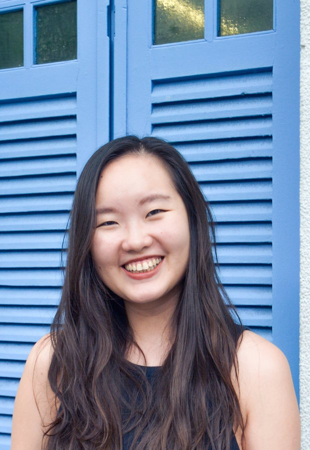

Curious by trade, marketer by craft.
Pivoting from marketing Singapore to the world to marketing products that consumers use everyday.
5 years experience in international expansion, regulatory enablement, and go-to-market strategy — across government and a Y-Combinator backed Series A startup. I thrive at the intersection of product, market analysis, and user behaviour, and especially get excited when it's a product that people encounter in their daily lives. I'm that friend that is always telling you about a new product, tv show, or book that I think you're going to LOVE — and chances are, you will!
Now pursuing an MBA at Berkeley Haas (Class of 2027) and exploring PMM and Growth roles in consumer tech. Long-term, I'm excited to help great products get in the hands of new users who will use it, love it, and change their lives with it.
Validated Peripheral Artery Disease as a white-space opportunity for an AI cardiovascular startup. Framed value props across hospitals, payers, and med-device companies through 10 expert interviews.
Wrote the narrative for Singapore's first international AI policy speech. Evangelised Singapore's approach to 200+ executives at Warner Bros, Netflix, and other consumer tech leaders.
Analysed the repeat-purchase journey for retail. Identified friction points and redesigned a checkout flow with 93% fewer clicks. A masterclass in cutting until it hurts.
Fused historical race data and live odds to predict optimal Fantasy F1 picks. Mediocre at F1 — surprisingly useful as a consumer product PMM brief on data-driven personalisation.
Built for my PT exercise programme after I couldn't find one that worked the way I needed. Simple, configurable, and the reason I actually do my exercises now.
A cosy cooking game I'm building to learn the AWS tech stack by deploying on it. Inspired by Dave the Diver and Unpacking. Currently: learning more than cooking.